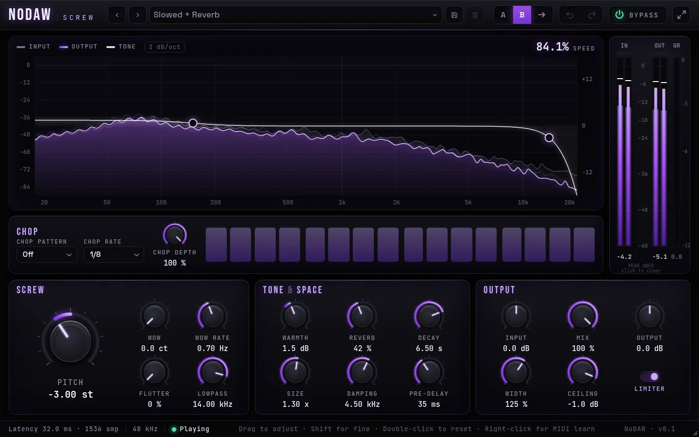

Slow it.
Screw it.
Live.
A real-time chopped & screwed effect for your DAW: pitch down, tape wobble, a chop gate you draw, lush reverb and stereo width, held under a true-peak limiter. Built by NoDAW Labs, the team behind HalfScrew.

Click the 16 steps under the waveform to draw your own chop. The gate follows the BPM field. Drop any audio file on this panel to use your own. Double-click a slider to reset it. Space plays and stops. Export renders offline with the current settings.
What’s real here.
- PortedThe engine: pitch (SOLA varispeed), wow & flutter, lowpass, warmth shelf, the 16-step chop gate (all 8 patterns plus your own drawn pattern), the FDN reverb, M/S width, the delay-matched mix and the true-peak limiter.
- ParamsAll 20 parameters plus bypass, with the plugin’s own ranges, units and curves (21 host parameters in the plugin).
- PresetsAll 12 factory presets, by name and value, read from the plugin’s preset files.
- A/BBypass uses the engine’s own crossfade to the latency-delayed dry signal, so the switch never clicks.
- Plugin onlyThe plugin’s own UI, 160-band analyser and in/out/limiter meters (this page draws a simpler spectrum and meter)
- Plugin onlyHost tempo sync for the chop gate (here it follows the BPM field)
- Plugin onlyDAW automation, MIDI learn, undo/redo, A/B slots and user presets
- StatusThe Screw plugin (VST3 + CLAP, Windows x64) is in development: unreleased, not for sale, no price yet.
Screw, stage by stage.

Draw the chop
Click and drag the step gate, pick a rate, set the depth. Your custom pattern saves with the session.

See what you hear
160-band input/output spectrum at 60 fps with peak hold and a cursor frequency/dB readout, plus in/out and limiter meters.

Presets, A/B, undo
12 factory presets, save your own, A/B compare, undo/redo, and right-click MIDI learn on any knob.
Latency reported
Pitch, wobble and limiter latency is reported to the host, and the dry path is delay-matched so Mix at 0% stays phase-aligned.
Real-time safe
No allocation or locks in the audio callback. Buffers are sized up front; denormals are guarded.
Sessions restore
Smoothers snap on load, so a saved session opens at exactly the sound you left.
Validated
On the Linux headless build: Steinberg VST3 validator 47/47 passed; clap-validator 36 passed, 0 failed, 8 skipped.
 Harmonic SpaceSpectral Space Designer
Harmonic SpaceSpectral Space Designer Chronos Dynamic EQSeven dynamic bands
Chronos Dynamic EQSeven dynamic bands Chronos WeaverSpectral morph, freeze & cloud
Chronos WeaverSpectral morph, freeze & cloud